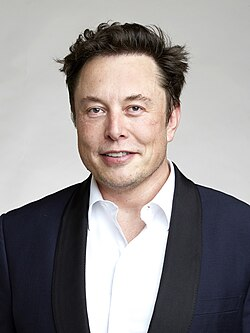

<!DOCTYPE html>
<html lang="pl">
<head>
    <meta charset="UTF-8">
    <meta name="viewport" content="width=device-width, initial-scale=1.0">
    <title>Document</title>
    <link rel="stylesheet" href="style.css">
</head>
<body>
    
</body>
</html>


<div id="o"><h1>Początek kariery</h1></div> <br>
W 1995 z bratem, Kimbalem, korzystając z pieniędzy zebranych od niewielkiej grupy inwestorów-aniołów oraz z pomocą finansową ojca w wysokości 200 tys. dol, założył Zip2[w innych językach], firmę zajmującą się oprogramowaniem sieciowym. Firma opracowała i sprzedała internetowy „przewodnik po mieście” dla branży wydawniczej. Musk uzyskał kontrakty z „The New York Times” i „Chicago Tribune” oraz przekonał zarząd do porzucenia planów połączenia się z CitySearch.<br> Będąc w Zip2, Musk chciał zostać CEO; jednak nikt z członków zarządu na to nie pozwolił.<br> Compaq przejął Zip2 za 307 milionów USD w gotówce i 34 miliony USD w opcjach na akcje w lutym 1999. Musk otrzymał 22 miliony USD za swój siedmioprocentowy udział w sprzedaży.
<br>
<h2>tak sobie wygląda: </h2><br>
